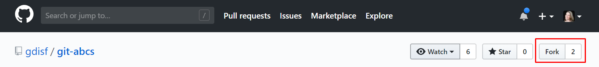
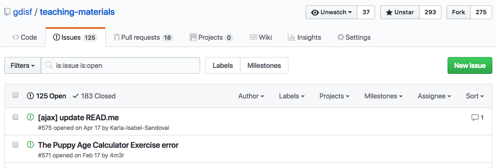
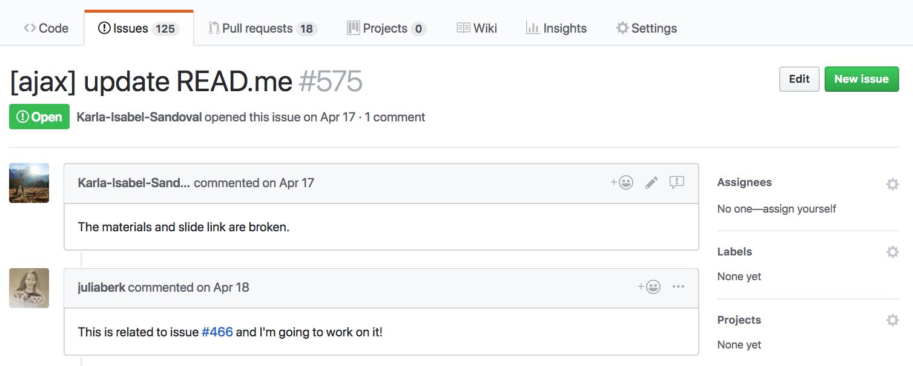

Command-Line Git for Open Source
teaching-materials.org/git-oss
Agenda
This class will be a combo of guided and independent practice
- Command-line review
- Setting up Git on your computer
- Anatomy of a repository
- Making a pull request, step-by-step
- Syncing with remote repositories
- Contribute to this repository!
- Resources and Tips
Command-Line Review
Common commands:
cd: change directory (folder)ls: list all the filesmkdir: make directoryrmdir: remove/delete directorytouch: create a filerm: remove a filepwd: find out the file path of current directory you are in, from the root
Working in Vim
Git’s default text editor is vim, and you may sometimes find yourself in there accidentally.
Here are some basic commands:
i- puts you in editor mode, so you can type the content of your file- Esc - puts you in “normal” or command mode, which you need to exit
:wq- from normal mode, saves and exits:q!- from normal mode, exits without saving
What is Git?

(source: xkcd)
Git Setup
Check for Git in your terminal:
gitCheck your config:
git config --global --listGit Setup
If needed, add your username and email:
git config --global user.name "YOUR_USERNAME"git config --global user.email "github-acct-email@example.com"You can check your config again:
git config --global --listWhat is GitHub?
GitHub is an online service where people can collaborate on projects using Git.
Many open source projects have their code on GitHub.
Before we get started, make sure you have a GitHub account and have verified your email.
Anatomy of a Repo
A repository (or “repo”) is folder for a project, with a single tracked history.
Let’s look at the repository for this website:
Let’s Start
Go to our practice repository:
https://github.com/gdisf/git-abcsLet’s Start
Fork the main repo.
Now you have your own version on GitHub.
Make a local version
On your fork, click the Download or clone button.
- If the heading says, “Clone with SSH,” click Use HTTPS.
- Copy the link
Make a local version
- In the terminal,
cdto where you want to store the repo - Clone the repo
git clone <paste-the-link-here>Make a local version
lsto see your new repocd git-abcsto go into the repolsto see the files match the online repo- Check the log:
git log --onelineCompare this to the online commit history.
Making changes: Create a branch
Check for branches in the local repo:
git branchWe’re on master, which we want to keep the same while we work.
Making changes: Create a branch
Checkout a new branch:
git checkout -b add-letter-x (Replace x with the letter you picked at the beginning of class.)
Check your branches again:
git branchMake a change on your branch
- Open the folder in your favorite text editor.
- Create a new file in the
pagesfolder, calledletter-x.md(replacingxwith your letter). - Add a sentence to the file, about something that starts with your letter, like "M is for marmoset."
- Save the file.
Track your change with Git
Check the status of your repo:
git statusGit sees you’ve made a change!
Add the changed file to staging:
git add pages/<filename>Check the status again:
git statusTrack your change with Git
Commit your staged change with a commit message:
git commit -m "Add a page for letter <your-letter>"The change is now part of the log for this branch:
git log --onelineYour branch is now 1 commit ahead of your online fork.
Push to your fork
Check for remote repositories:
git remote -vWhen you cloned, Git remembered the link to the repo you cloned from, and called it origin
Push to your fork
Push your branch to origin to see it on your fork:
git push origin your-new-branch-nameCheck your repo online - it now has your branch, with your commit.
Propose your changes
Make a pull request to propose your changes to the main repo.
- In your fork or the main repo, click the Compare & pull request button.
- Check the change list to be sure it contains the changes you want (and nothing else)
Propose your changes
- Title the PR: “[WIP] Add letter
” (WIP = Work In Progress, because we’re not done with changes, but we want others to see our work so far.) - Add a description of the change, and what you still plan to do (add an image to the page).
- Submit the pull request! You can see yours and others in the main repo.
Make more local changes
Keep working on the same branch as before.
- Find a non-copyrighted image of something that starts with your letter, and add it in the
imagesfolder. - Edit your
letter-x.mdfile to add the image to the page, along with a heading, using thepages/letter-b.mdfile as a guide.
(We’re using Markdown, because GitHub renders it as styled text in the browser. Check out their Markdown guide for more tips.)
Make more local changes
Check your status to see what files have changed:
git statusCheck the diff to see line-level changes (inside a file):
git diffAdd all changes in the current folder to staging:
git add .Make more local changes
Check that your changes are staged:
git statusCommit the staged changes:
git commit -m "Add image to page <your-letter>"Check the log:
git log --onelineAdd changes to your PR
Pushing commits to your branch on origin will add the commits to your PR.
git push origin same-branch-as-before- Check the PR to see your commit was added.
- Add a comment to say your changes are done and ready for review.
- Edit the PR title to remove the “[WIP]”.
Merging your PR
A project maintainer will review your pull request. If everything looks good, they’ll merge it.
When a PR is merged:
- All commits in the PR are added to the master branch on the main repo.
- This will not update your fork, or your local repo.
Sync your master branches
First, you need to get the changes from the main repo into your local version.
Switch to your master branch, because that’s the one we want to keep in sync:
git checkout masterCheck your remote repos:
git remote -vYou’re still connected only to the fork (origin).
Sync your master branches
Add the main repo, calling it upstream:
git remote add upstream https://github.com/gdisf/git-abcs.gitCheck your remotes again:
git remote -vYour local repo is now connected to both remotes.
Sync your master branches
Check your branches, including remote branches:
git branch -rFetch the branches and history from upstream:
git fetch upstreamCheck that you can see more branches now:
git branch -rSync your master branches
Compare your master branch history with the upstream master:
git log --oneline master..upstream/masterThis lists commits on upstream that your master doesn’t have. Merge those to your current branch (master):
git merge upstream/masterSync your master branches
Check your log to see the new commits from upstream:
git log --onelineCheck to see there are no commits you’re missing:
git log --oneline master..upstream/masterSync your master branches
Check your status:
git statusYour local master is now ahead of your origin (fork). Push those added commits:
git push origin masterEverything matches now!
Make a new change
Let’s make a new change, on a new branch, based on the updated master. First, make sure you’re still on master:
git branchMake a new change
Checkout a new branch based on the current branch (master):
git checkout -b link-letter-x(Replace x with your same letter as before.)
Double-check you’re on your new branch:
git branchMake a new change
- Return to your text editor, and see all of the new pages and images!
- Open the file for the letter before your letter.
- Add a “next page” link to the bottom of the file, linking to your page.
(You can use the last line of
pages/letter-a.mdas an example.) - Save the file.
Commit your new change
Follow the steps from before to:
- Check your status.
- Add your changes.
- Commit your change with a message.
- Check your log.
- Push the new branch to your origin.
Make a new PR
Follow the steps from before to:
- Start a new PR.
- Confirm your changes.
- Write a descriptive title and comment. (no need for WIP this time)
We've Got Issues
GitHub issues are where collaborators track bugs, propose features, and discuss changes. They are for conversation, and do not actually change code.
Anyone can open or comment on an issue.
Claiming issues
If you find an issue you'd like to work on, avoid duplicating work by commenting to say you'll volunteer.
Feel free to ask questions if you need clarification before starting!
Fix an issue
Use what you’ve learned to claim an issue and make a PR to fix it.
- You can add the issue number to the branch name, like
issue-8-add-m - If you have time, tackle a new issues.
- If there are no more issues, create a new one and claim it.
Contribute to a real repo!
Use what you’ve learned to fix an issue on the
teaching-materials repo.
- In the issue list, click the newbies-only label for friendly, bite-sized issues.
- Check the CONTRIBUTING.md for contribution guidelines.
- Don’t forget to make a fork before cloning!
Finding more projects
Some tools for finding newbie-friendly projects and issues:
- Search for issues with common newcomer labels at issuehub.io and up-for-grabs.net
- Check out a repo's community profile for indicators of a healthy community
- Watch the repos of tools you use, or new ones as you're learning them. Read issues and pull requests as they come in to get familiar with the project and see where you can contribute.
Tips and Resources
- Handling merge conflicts
- How to “undo” when you get stuck
(some swearing in there) - Shubeksha Jalan’s journey into open source
- Open source meetups with Write/Speak/Code
(women & non-binary coders only)